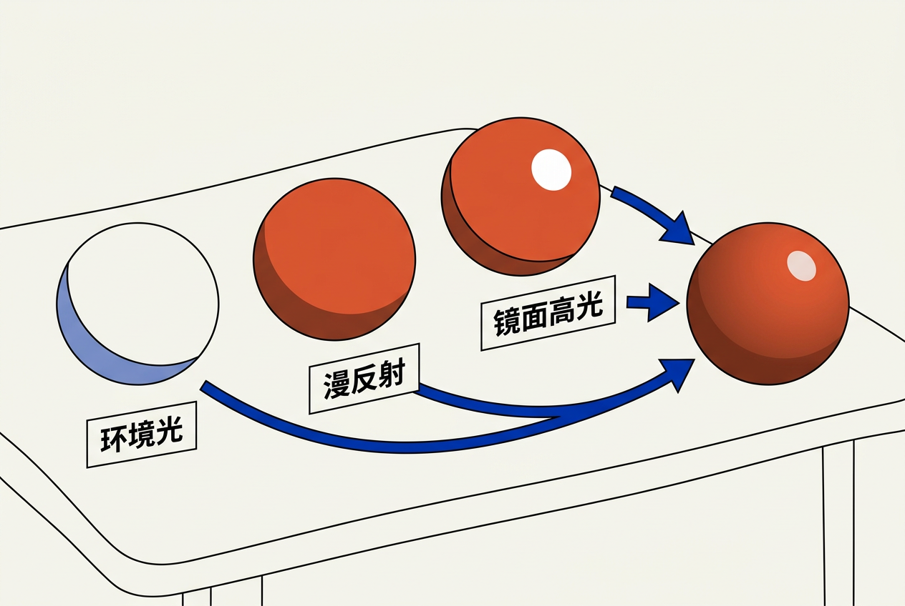
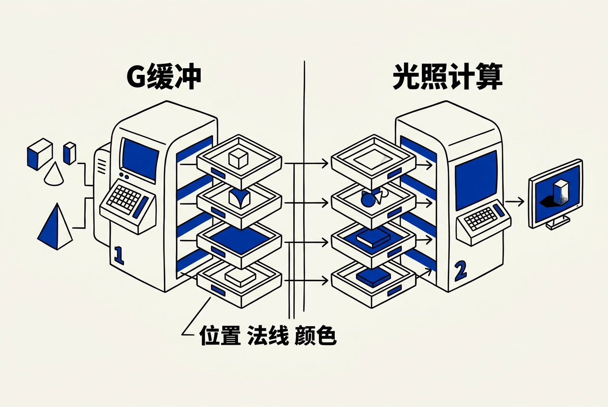

第12章：光照与后处理 — 零基础讲义
讲义说明
本讲义基于 Jason Gregory 所著《Game Engine Architecture Volume II》第4版第12章（Lighting and Post-Processing, p.136-235）。光照是实时渲染皇冠上的明珠——它决定了画面是"塑料感"还是"照片感"。
本版插画由 ImageGen + Guizang 材质插画标准流程生成。
学习目标
- 理解光照问题的物理本质——光线如何与表面交互
- 掌握 Phong/Blinn-Phong 光照模型的三个分量
- 理解 PBR（基于物理的渲染）的核心概念
- 区分前向渲染和延迟渲染的架构差异
- 了解光线追踪如何解决传统光栅化的光照局限
- 掌握常见后处理效果的原理
12.1 光照问题
12.1.1 光照的物理本质
12.1.1.1 光是什么？
光是电磁辐射——一束光子从光源出发，在场景中传播、反弹、被吸收和散射，最终一部分光子进入你的眼睛（或相机），形成你看到图像。游戏渲染的目标就是近似模拟这个过程，在16.7ms内完成。
12.1.1.2 渲染中的两类光照
| 直接光照 | 间接光照（全局光照/GI） | |
|---|---|---|
| 定义 | 光源→物体表面→眼睛（一次弹射） | 光源→多个表面弹射→眼睛 |
| 计算难度 | 简单（一次 dot product） | 极难（需积分所有入射方向） |
| 视觉效果 | 只看到直接受光的面 | 阴影不纯黑、颜色溢散到相邻面 |
| 实时实现 | 标准操作 | 光线追踪 / Light Probe / 烘焙 |
因为真实世界中，几乎没有纯黑的阴影。光线到达物体表面后会反弹无数次——红色墙壁会把红色光"染"到旁边的白色球上。没有GI的渲染把"没被直接光照到"的地方设为黑色（或简单的环境光），失去了真实光线的复杂交互。
12.2 辐射度量学基础
12.2.1 核心物理量
12.2.1.1 从能量到亮度
| 物理量 | 符号 | 单位 | 含义 |
|---|---|---|---|
| 辐射通量 | Φ | W(瓦) | 光源每秒发出的总能量 |
| 辐射强度 | I | W/sr | 单位立体角的能量（点光源的"多亮"） |
| 辐亮度 | L | W/(sr·m²) | 单位面积+单位立体角的能量——渲染的核心量 |
12.2.2 BRDF
12.2.2.1 双向反射分布函数
BRDF（Bidirectional Reflectance Distribution Function） 是描述"表面如何反射光"的数学函数——给定入射方向 ωi 和出射方向 ωo，BRDF 告诉你反射比例。金属和塑料的 BRDF 完全不同。
// BRDF 的输入输出
f(ωi, ωo) = 反射辐亮度 / 入射辐照度
// PBR 中常用的 Cook-Torrance BRDF 有三个分量：
// ① 法线分布函数 (NDF)：这个表面有多粗糙
// ② 几何遮蔽函数 (G)：微表面互相遮挡
// ③ 菲涅尔方程 (F)：掠射角反射更多光12.3 渲染方程
12.3.1 光照的统一数学框架
12.3.1.1 Kajiya 渲染方程（1986）
// 渲染方程——所有光照计算的统一理论
Lo(p, ωo) = Le(p, ωo) + ∫ f(p, ωi, ωo) × Li(p, ωi) × (n·ωi) dωi
// Lo: 从点 p 向方向 ωo 射出的光
// Le: 自身发光（如发光表面）
// f: BRDF（表面如何反射）
// Li: 从方向 ωi 进入点 p 的光
// n·ωi: 光线方向和法线的夹角余弦（倾斜=暗）这个方程是所有实时和离线渲染的理论基础。积分符号在实时渲染中通过求和近似（离散化），在光线追踪中通过蒙特卡洛采样逼近。
12.4 着色方程

12.4.1 Phong / Blinn-Phong 光照模型
12.4.1.1 三个分量
这是最经典的教学模型——虽然不是物理精确，但直观清晰。
// Phong 光照 = 环境 + 漫反射 + 镜面高光
color = ambient + diffuse + specular
// ① 环境光：最简单的"防止纯黑"的方法
ambient = material.ambientColor * scene.ambientLight
// ② 漫反射：表面法线和光线方向的夹角决定亮度
float NdotL = max(dot(normal, lightDir), 0.0);
diffuse = albedo * lightColor * NdotL
// ③ 镜面高光：反射光线和视线越近越亮
float3 reflectDir = reflect(-lightDir, normal);
float specFactor = pow(max(dot(reflectDir, viewDir), 0.0), shininess);
specular = specColor * lightColor * specFactor
// Blinn-Phong 改进（用半程向量替代反射向量，更快）
float3 halfVec = normalize(lightDir + viewDir);
float specFactor = pow(max(dot(normal, halfVec), 0.0), shininess);12.4.2 PBR（基于物理的渲染）
12.4.2.1 核心原则
| 原则 | 含义 |
|---|---|
| 能量守恒 | 反射光不能超过入射光。镜面高光亮→漫反射必须暗 |
| 微表面理论 | 看似光滑的表面在微观上是不规则的微小镜子 |
| 菲涅尔效应 | 所有表面在掠射角都变得像镜子（看远处水面→看到反射） |
| 金属/非金属区分 | 金属吸收折射光（无漫反射），非金属两者都有 |
12.4.2.2 标准 PBR 纹理集
现代 3A 游戏的资产通常包含这些基于物理定义的纹理：Albedo（基础色，无光照信息）、Normal Map（法线扰动——用小纹理模拟大凹凸）、Roughness（粗糙度，0=镜面/1=完全漫反射）、Metallic（金属度，0=非金属/1=金属）、AO（环境光遮蔽——角落处加暗）。
12.5 光栅化光照技术

12.5.1 前向渲染 vs 延迟渲染
12.5.1.1 核心差异
| 前向渲染（Forward） | 延迟渲染（Deferred） | |
|---|---|---|
| 思路 | 每个物体×每个光源=一次Pass | 先存几何信息，再统一光照 |
| 优点 | 支持透明、MSAA、简单 | 光源多时性能好、光照和几何解耦 |
| 缺点 | 光源×物体复杂度爆炸 | 显存大（G-Buffer）、不支持MSAA |
| 使用场景 | VR（需MSAA）、移动端 | 3A主机/PC游戏（大量动态光源） |
12.5.1.2 G-Buffer 的内容
// 延迟渲染的第一阶段：写入 G-Buffer（不计算光照）
// 实际是多个渲染目标（MRT）同时写入
GBuffer0: 漫反射颜色（Albedo RGB）+ 材质标志
GBuffer1: 世界空间法线（Normal XYZ）
GBuffer2: 粗糙度 + 金属度 + AO（打包到一个32位）
GBuffer3: 世界空间位置（或从深度重建）
// 第二阶段：光照Pass——对每个光源，读取G-Buffer计算贡献
for each light:
for each screen pixel:
vec3 pos = GBuffer3[pos]
vec3 N = GBuffer1[pos]
vec3 V = normalize(cameraPos - pos)
// ... BRDF 计算 ...
color += CalcLightContribution(light, pos, N, V, GBuffer0, GBuffer2)12.5.2 阴影技术
12.5.2.1 Shadow Map（阴影贴图）
最广泛使用的实时阴影技术：从光源位置渲染一遍场景到一张深度纹理→正常渲染时检查每个像素是否在阴影中（比较它的深度和Shadow Map中对应位置的深度）。问题：锯齿、自阴影失真、分辨率受限。
12.5.2.2 级联阴影贴图（CSM）
近处用高分辨率 Shadow Map，远处用低分辨率——多张 Shadow Map 覆盖不同距离范围。开放世界游戏标配。
12.6 光线追踪光照
12.6.1 路径追踪原理
12.6.1.1 蒙特卡洛积分
渲染方程中的积分在解析上是无解的——但可以用随机采样逼近。路径追踪 = 从相机发射光线 → 碰撞物体 → 随机采样 BRDF 决定下一个方向 → 继续追踪直到击中光源或达到最大深度。累积数千条路径的样本取平均，就得到了这个像素的近似颜色。这就是皮克斯渲染一部电影要花数小时的原因——需要大量样本来消除噪声。
12.6.2 混合渲染管线
12.6.2.1 光栅化主力+光线追踪辅助
当前游戏没有"全光线追踪"——GPU 不够快。实际做法：光栅化处理主画面，光线追踪仅用于：反射（替代模糊的 SSR）、环境光遮蔽（替代 SSAO）、阴影精化（替代 Shadow Map 的锯齿）、全局光照（替代烘焙 Light Probe）。每一帧可能只追踪每条光线 1-2 次（1 SPP），用时间域累积+Temporal Denoising 重建清晰的图像。
12.7 后处理
12.7.1 色调映射（Tone Mapping）
12.7.1.1 HDR→LDR 的必要性
引擎内部用 HDR（高动态范围）计算光照——一个像素亮度可能是 0.001（暗处）到 1000（直视太阳）。但显示器只能显示 0-255（LDR）。色调映射把巨大的亮度范围"压缩"到显示器能显示的范围内，同时保留明暗细节。常用算法：ACES（电影工业标准）、Reinhard。
12.7.2 抗锯齿（Anti-Aliasing）
12.7.2.1 TAA 的工作原理
TAA（Temporal Anti-Aliasing）是当前游戏标配：每帧微调相机投影矩阵（亚像素偏移），把多帧的采样混合在一起。一帧有锯齿、两帧减少锯齿、四帧几乎完美——用人眼的时间累积来补足单帧的空间采样不足。代价：快速移动时有鬼影（需要 Velocity Buffer 和拒绝采样来消除）。
12.7.3 环境光遮蔽（AO）
12.7.3.1 SSAO 与 RTAO
SSAO： 纯后处理——基于深度缓冲在屏幕空间采样邻近像素的深度差异。角落和缝隙的深度差异大→判定为闭塞→加暗。快但局限性明显（不知道屏幕外的几何体）。RTAO： 用光线追踪从表面点发射短射线探测周围几何体的存在→物理正确的环境光遮蔽。比 SSAO 精确但需要 RT 硬件。
本章核心洞察
所有光照技术——从最简单的 Phong 模型到最复杂的路径追踪——都试图以不同的精度和速度近似求解 Kajiya 的渲染方程。Phong 用三个简单公式近似，PBR 用微表面理论近似，路径追踪用蒙特卡洛积分逼近。
三条光照准则：
1. 能量守恒是第一原则： 不合能量守恒的光照模型必定产生不真实结果
2. 光照和几何解耦： 延迟渲染的核心思想——先存几何，再算光
3. 正确的光照靠物理，好看的光照靠艺术： 好的游戏光照是 PBR 物理正确 + 艺术家手动调整的结合
📝 课后练习题（含答案）
① 环境光： ambientColor * ambientLight。最简单的全局近似——防止暗面纯黑。② 漫反射： albedo * lightColor * max(dot(N,L),0)。表面法线和光线的夹角决定亮度。③ 镜面高光： specColor * lightColor * pow(max(dot(R,V),0), shininess)。反射向量越接近视线越亮。三者相加=最终颜色。
① 能量守恒： 出射光≤入射光。② 微表面理论： 表面在微观上是微小镜子。③ 菲涅尔效应： 掠射角反射增强。④ 金属/非金属区分： 金属无漫反射，非金属两者都有。
前向：物体×光源，在像素着色器中一次性算光照。延迟：先存几何到G-Buffer（位置/法线/颜色/材质），再统一光照。G-Buffer存的：Albedo、法线、粗糙度+金属度+AO、深度（或位置）。延迟渲染的优势：光照计算复杂度从O(物体×光源)降到O(像素×光源)。
从光源位置渲染深度图→正常渲染时比较像素深度和Shadow Map深度→更深=在阴影中。缺陷：分辨率导致的锯齿(Shadow Acne)、自阴影失真(需加bias)、硬边缘(需PCF滤波)。CSM用多张级联Shadow Map缓解分辨率和距离的矛盾。
光栅化的思路是"把三角形投影到屏幕"——只关心当前三角形的像素，不关心它之外的世界。反射需要知道"从表面反弹的光来自哪个方向"——光栅化没有这个信息（它能看到的只有屏幕空间内已经渲染好的像素）。光线追踪的天生优势：射线击中表面后，它拥有该点的完整几何和材质信息，可以继续追踪下一个弹射方向。
🤖 qAagent 零基础问答区
主要原因：① 没有 PBR——用了不遵循能量守恒的老式光照模型（Phong/Blinn-Phong），导致高光过亮或过暗。② 没有全局光照——暗面用常数环境光代替间接光照，失去了弹射光的真实感。③ 粗糙度映射不准确——所有表面感觉像同一种材质。解决方案：上 PBR + 环境光遮蔽 + 实时GI（如Lumen）。
TAA 用过去几帧的像素混合当前帧——这天然导致"时间域模糊"（特别是移动中）。解决：① 锐化后处理（如 CAS / FidelityFX Sharpening）。② Velocity Buffer 检测移动像素→减少混合权重。③ 更好的拒绝采样——丢弃和前帧差异过大的像素。DLSS/DLAA 用AI替代传统TAA，在反走样的同时保持锐度。
三个快速判断：① Albedo 贴图的亮度——暗处（木炭）0.02-0.04，中等（红砖）0.2-0.3，亮色（白雪）0.7-0.8。超过 0.9 的基本不是真实材质。② 金属的 Albedo 应该有颜色（金=黄色，铜=红棕色），非金属的 Albedo 不饱和。③ 粗糙度可以通过边缘模糊反射程度目测——光滑表面反射清晰，粗糙表面反射模糊。
- 学习目标
- 学习目标
- 12.1 光照问题
- 12.1.1 光照的物理本质
- 12.1.1.1 光是什么？
- 12.1.1.2 渲染中的两类光照
- 12.2 辐射度量学基础
- 12.2.1 核心物理量
- 12.2.1.1 从能量到亮度
- 12.2.2 BRDF
- 12.2.2.1 双向反射分布函数
- 12.3 渲染方程
- 12.3.1 光照的统一数学框架
- 12.3.1.1 Kajiya 渲染方程（1986）
- 12.4 着色方程
- 12.4.1 Phong / Blinn-Phong 光照模型
- 12.4.1.1 三个分量
- 12.4.2 PBR（基于物理的渲染）
- 12.4.2.1 核心原则
- 12.4.2.2 标准 PBR 纹理集
- 12.5 光栅化光照技术
- 12.5.1 前向渲染 vs 延迟渲染
- 12.5.1.1 核心差异
- 12.5.1.2 G-Buffer 的内容
- 12.5.2 阴影技术
- 12.5.2.1 Shadow Map（阴影贴图）
- 12.5.2.2 级联阴影贴图（CSM）
- 12.6 光线追踪光照
- 12.6.1 路径追踪原理
- 12.6.1.1 蒙特卡洛积分
- 12.6.2 混合渲染管线
- 12.6.2.1 光栅化主力+光线追踪辅助
- 12.7 后处理
- 12.7.1 色调映射（Tone Mapping）
- 12.7.1.1 HDR→LDR 的必要性
- 12.7.2 抗锯齿（Anti-Aliasing）
- 12.7.2.1 TAA 的工作原理
- 12.7.3 环境光遮蔽（AO）
- 12.7.3.1 SSAO 与 RTAO
- 本章核心洞察
- 📝 课后练习题（含答案）
- 🤖 qAagent 零基础问答区